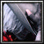
Player profile
ximperial
Rank #39server.eurobattle.netSeason 2
Most played · Dante スパーダの息子
Matches4614 wins · 32 losses
Win rate30%
Avg K / D / A33.5 / 45.0 / 16.5
Avg APM126
Avg damage dealt242.9k
Avg damage taken157.1k
Heroes played
Explore heroes →| HERO | MATCHES | WIN RATE | AVG K / D / A | AVG DMG |
|---|---|---|---|---|
Dante スパーダの息子Most played | 3 | 67% | 24.7 / 44.3 / 19.3 | 197.7k |
ロロノア・ゾロ | 3 | 67% | 36.0 / 44.7 / 14.3 | 269.6k |
遠野志貴 | 3 | 33% | 30.7 / 35.0 / 16.7 | 226.4k |
Scion of the Flame | 3 | 0% | 32.3 / 43.7 / 13.3 | 216.2k |
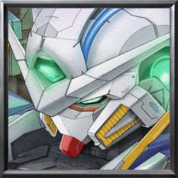 Gundam Exia Repair IV | 3 | 0% | 44.0 / 42.0 / 9.3 | 252.6k |
Megami no Mahou Shoujo | 2 | 50% | 45.0 / 47.0 / 22.5 | 373.5k |
Shin Jinrui Sozo Keikaku | 2 | 50% | 34.0 / 46.0 / 14.0 | 236.2k |
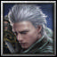 V バージルースパーダの息子 | 2 | 0% | 30.5 / 51.5 / 25.5 | 188.9k |
【Silver Arbiter】 | 2 | 0% | 28.0 / 54.0 / 9.0 | 187.7k |
仮面ライダークロノス | 1 | 100% | 39.0 / 43.0 / 16.0 | 241.8k |
永劫の火鳥 | 1 | 100% | 38.0 / 49.0 / 25.0 | 282.5k |
『Codename 555-SB』 | 1 | 100% | 31.0 / 52.0 / 18.0 | 192.6k |
ナミカゼ ミナト | 1 | 100% | 25.0 / 30.0 / 21.0 | 219.6k |
Megami no Mahou Shoujo EX | 1 | 100% | 37.0 / 38.0 / 22.0 | 355.1k |
Ragna | 1 | 100% | 44.0 / 27.0 / 13.0 | 260.6k |
仮面ライダークウガ | 1 | 0% | 26.0 / 37.0 / 11.0 | 176.0k |
黒崎 一護断界 | 1 | 0% | 38.0 / 45.0 / 19.0 | 222.1k |
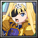 Synthesis Thirty | 1 | 0% | 34.0 / 59.0 / 17.0 | 241.6k |
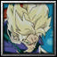 Future トランクス | 1 | 0% | 36.0 / 55.0 / 26.0 | 348.0k |
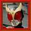 仮面ライダーAmazing クウガ | 1 | 0% | 35.0 / 49.0 / 20.0 | 222.1k |
Firefly | 1 | 0% | 36.0 / 56.0 / 21.0 | 316.0k |
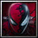 Spider-Man | 1 | 0% | 32.0 / 52.0 / 10.0 | 227.7k |
黒鉄一輝 | 1 | 0% | 36.0 / 49.0 / 19.0 | 278.1k |
Shin Jinrui Sozo Keikaku Ex | 1 | 0% | 47.0 / 40.0 / 10.0 | 207.1k |
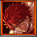 『千魂の刃』 | 1 | 0% | 38.0 / 52.0 / 20.0 | 276.0k |
Lelouch Vi Britannia | 1 | 0% | 23.0 / 48.0 / 18.0 | 304.3k |
ユーハバッハ | 1 | 0% | 15.0 / 54.0 / 25.0 | 151.6k |
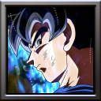 身勝手の極意 | 1 | 0% | 45.0 / 39.0 / 15.0 | 287.6k |
Seha Lee 2 | 1 | 0% | 31.0 / 37.0 / 12.0 | 253.4k |
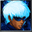 blue KEZYO | 1 | 0% | 33.0 / 38.0 / 14.0 | 184.0k |
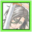 Tokinada Tsunayashiro | 1 | 0% | 26.0 / 41.0 / 14.0 | 249.6k |
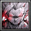 孫悟飯 | 1 | 0% | 19.0 / 54.0 / 10.0 | 218.1k |
Averages use recorded statistics only; unavailable historical values are shown as —.
Recent matches
Open a match for its scoreboard and kill matchups.
LOSS65:53
MCB #2000225
12 Nov 2026 · 20:59 WIB
33.0 / 56.0 / 25.0View match →
LOSS51:04
MCB #2000223
12 Nov 2026 · 02:01 WIB
26.0 / 37.0 / 11.0View match →
LOSS58:22
MCB #2000222
10 Nov 2026 · 23:22 WIB
38.0 / 45.0 / 19.0View match →
LOSS62:14
MCB #2000220
10 Nov 2026 · 20:21 WIB
34.0 / 59.0 / 17.0View match →
WIN58:28
MCB #1000070
09 Nov 2026 · 01:28 WIB
39.0 / 43.0 / 16.0View match →
LOSS73:03
MCB #1000069
09 Nov 2026 · 00:10 WIB
36.0 / 55.0 / 26.0View match →
LOSS62:40
MCB #1000068
08 Nov 2026 · 18:48 WIB
35.0 / 49.0 / 20.0View match →
LOSS75:38
MCB #2000217
08 Nov 2026 · 16:31 WIB
36.0 / 56.0 / 21.0View match →
LOSS56:32
MCB #2000216
08 Nov 2026 · 15:08 WIB
32.0 / 52.0 / 10.0View match →
LOSS66:40
MCB #1000067
08 Nov 2026 · 13:56 WIB
36.0 / 49.0 / 19.0View match →